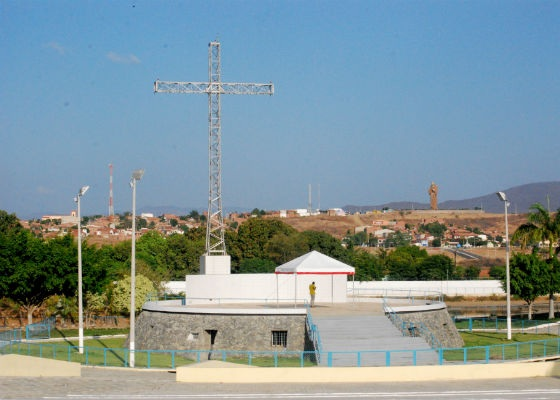

Geoinfos
Informações técnicas sobre relevo, população, IDH etc.
| INFORMAÇÕES | |
|---|---|
| Municípios limítrofes | Caridade, Aratuba e General Sampaio |
| Fundação | 29 de julho de 1846 (174 anos) |
| Área total | 3.218,423 km² |
| Clima | Semi-Árido |
| IDH | 0,612 — médio |
| PIB | R$ 392 022,000 mil |
| INFORMAÇÕES TERRITORIAIS | |
|---|---|
| Número de habitantes | 76.997 habitantes |
| Superfície de Canindé |
321 846 hectares
3218,46 km² (1242,65 sq mi) |
| Densidade populacional | 23,9 ha./km² |
| Altitude de Canindé | 148 metros de altitude |
| Coordenadas geográficas decimais |
Latitude:
-4.35795
Longitude: -39.302 |
| Coordenadas geográficas sexagesimais | Latitude: 4° 21' 29'' Sul , Longitude: 39° 18' 7'' Oeste |
| INFORMAÇÕES DO MUNICÍPIO | |
|---|---|
| Endereço da Prefeitura Municipal de Canindé |
Canindé
Prefeitura de Canindé
Largo Francisco Xavier de Medeiros, s/n - Imaculada Conceição CANINDÉ - CE, 62700-000 Brasil Work +55 85 3343-6937 Fax (85) 3343-6937 |
| Telefone da prefeitura |
(85) 3343-0675
Internacional: +55 85 3343-0675 |
| Fax |
(85) 3343-6937
Internacional: +55 85 3255-8317 |
| Endereço eletrônico da prefeitura |
Não Disponível
|
| Site oficial do município | caninde.ce.gov.br |
| INFORMAÇÕES DO ADMINISTRATIVAS | ||
|---|---|---|
| Prefeita de Canindé | MARIA DO ROSÁRIO ARAÚJO PEDROSA XIMENES | |
| Partido politico | DEM | |
| INFORMAÇÕES DE TRANSPORTE | |
|---|---|
| Transporte urbano disponível | - |
| Aeroporto |
Aeroporto Internacional Pinto Martins
107.2 km
Aeroporto de Sobral
137.5 km
Aeroporto Dix-Sept Rosado
234.6 km
|
| INFORMAÇÕES DE DISTÂNCIA A OUTRAS CIDADES | ||
|---|---|---|
| São Paulo : 2277 km | Rio de Janeiro : 2107 km | Brasília : 1584 km |
| Salvador : 963 km | Belo Horizonte : 1793 km | Manaus : 2306 km |
| Curitiba : 2576 km | Fortaleza : 110 km mais perto | Goiânia : 1750 km |
| Belém : 1073 km | Porto Alegre : 3121 km | Guarulhos : 2256 km |
| Campinas : 2227 km | São Luís : 592 km | Recife : 639 km |
| Distância calculada em linha reta! | ||
Fonte: Wikipedia e Cidade Brasil
História
Conheça mais sobre a história da Canindé.
A região das nascentes as margens do rio Curu e seus afluentes, bem como os afluentes do rio Choró, eram habitada por índios de origem Tapuia: Jenipapos-canindés, Kanyndés. A partir do século XVII, os portugueses começaram a ocupar estas terras, via o sistema de sesmarias, para a criação de gado e a lavoura no ciclo econômico de carne de sol e charque.
Em 1775, o sargento-mor português Francisco Xavier de Medeiros, estabeleceu-se às margens do rio Canindé e, logo depois, iniciou a construção de uma capela em honra a São Francisco das Chagas, que é o marco histórico e religioso de Canindé. A construção do templo atual foi encarregada ao arquiteto italiano Antonio Mazzini. Destacam-se também, os magníficos afrescos do pintor, também italiano, George Kau.
Esta capela ficou pronta em 1796, depois de disputas jurídicas e paralisações devido a Seca dos três setes (1777) e também a seca de 1793. A primeira imagem de São Francisco é conhecida popularmente como São Francisquinho, por conta de seu tamanho.
Em 1818, o povoado de Canindé havia sido elevado à categoria de vila, quando também foi demarcado seu território às margens do rio que nomeou o lugar. Sua fundação foi no dia 29 de julho de 1846.
Pontos Turísticos
Saiba mais sobre os melhores lugares e o que fazer em Canindé.
Basílica de São Francisco das Chagas
A Basílica é o coração do Santuário. Construída pelos frades capuchinhos e benta em 1915 é a Matriz do povo de Canindé e o Centro da Romaria de milhares de devotos do milagroso São Francisco. A construção da igreja dedicada a São Francisco das Chagas foi iniciada em 1775. O desenvolvimento da obra foi marcado por vários obstáculos como a seca e a posse da terra da igreja pelos três irmãos do baixo Jaguaribe, que mais tarde vieram a doá-la ao santo. Em 1796, a obra foi concluída e inaugurada, tornando-se um local sagrado de devoção franciscana. Após solicitação da comunidade canindeense, em 1817, a Capela foi elevada à Matriz, pelo então Bispo de Pernambuco, Dom Frei Antônio de São José Bastos. Desta forma, o povo ganhou a Paróquia de São Francisco das Chagas.
Praça dos Romeiros
A Praça dos Romeiros começou a ser construída em junho de 1987 e foi inaugurada em outubro de 1989 como sendo o maior anfiteatro a céu aberto do nordeste e um dos maiores monumentos sacros do mundo. Antigamente era chamada de Cidade de Assis fazendo-se alusão à terra natal de São Francisco. Imponente e acolhedora com seus jardins, corredores e alamedas é na Praça dos Romeiros onde acontecem os novenários dedicados a São Francisco. A Praça dos Romeiros conta com uma grande infraestrutura unindo ainda o Zoológico e o Museu. A área de celebrações da praça foi projetada para acolher cerca de 110 mil pessoas.
O espaço abriga ainda boxes de apoio, banheiros, altar de 20 m², cripta, vestiários, capela, sacramento e uma torre em formato de cruz de 30 metros que foi utilizada na visita do Papa João Paulo II ao estado do Ceará. Recentemente recebeu melhorias em sua estrutura com uma obra realizada entre dezembro de 2012 e setembro de 2013. Os trabalhos aconteceram com recuperação do piso, restauração dos bancos de alvenaria, estrutura elétrica com nova fiação, postes de concreto, luminárias, pinturas, troca do alambrado superior e melhorias ainda nos banheiros masculinos e femininos, além da parte ambiental com podagem de árvores e capinagens nas áreas abertas. Além do tradicional novenário de São Francisco, o local também é palco de eventos culturais, sociais e religiosos, como apresentação da coroação de Nossa Senhora (em maio) e a Celebração Solene do Natal do Senhor (em dezembro).

Zoológico São Francisco
Tudo começou quando os romeiros trouxeram alguns bichos para São Francisco e os frades franciscanos se viram obrigados a cuidar destes animais. No pátio da entrada para o Convento de Santo Antonio foram colocados em pequenos recintos alguns animais, mas o local era inadequado. No ano de 1974 foi construído um pequeno zoológico em frente ao museu. Com a construção da Praça dos Romeiros veio a ideia da construção de um novo Zoológico. A obra foi executada pela Secretaria Estadual de Desenvolvimento Urbano e Meio Ambiente e a Casa de São Francisco, sob a orientação do IBAMA. A inauguração foi feita pelo então governador do Ceará, Tasso Jereissati, em 13 de março de 1991.

Museu Regional São Francisco
Em 1972, o ex-vigário Frei Lucas Dolle instalou um modesto museu para expor o que além da fé os devotos deixavam na cidade. Funcionou na casa que servia de maternidade na Praça Cruz Saldanha onde hoje funciona o Centro de Catequese.
Em 3 de agosto de 1973, o novo Museu foi inaugurado possuindo em exposição aproximadamente 3.000 peças. Em julho de 1985, passou por reformas, ganhando ampliação e destaque a história de São Francisco na arte nordestina.
O Museu Regional São Francisco, ou Museu de Canindé, atualmente possui mais de 5.000 peças. O local conta com um importante acervo que está aberto à visitação diariamente. Como reza a tradição, os romeiros trazem as mais exóticas peças de expressivo valor histórico, cultural e religioso.
O museólogo Everaldo Germano reordenou na segunda reforma os espaços do Museu de Canindé que foi reinaugurado em 22 de janeiro de 2008, na administração do Pároco Frei João Amilton.
Como Chegar?
Veja como chegar nos melhores pontos de Canindé.